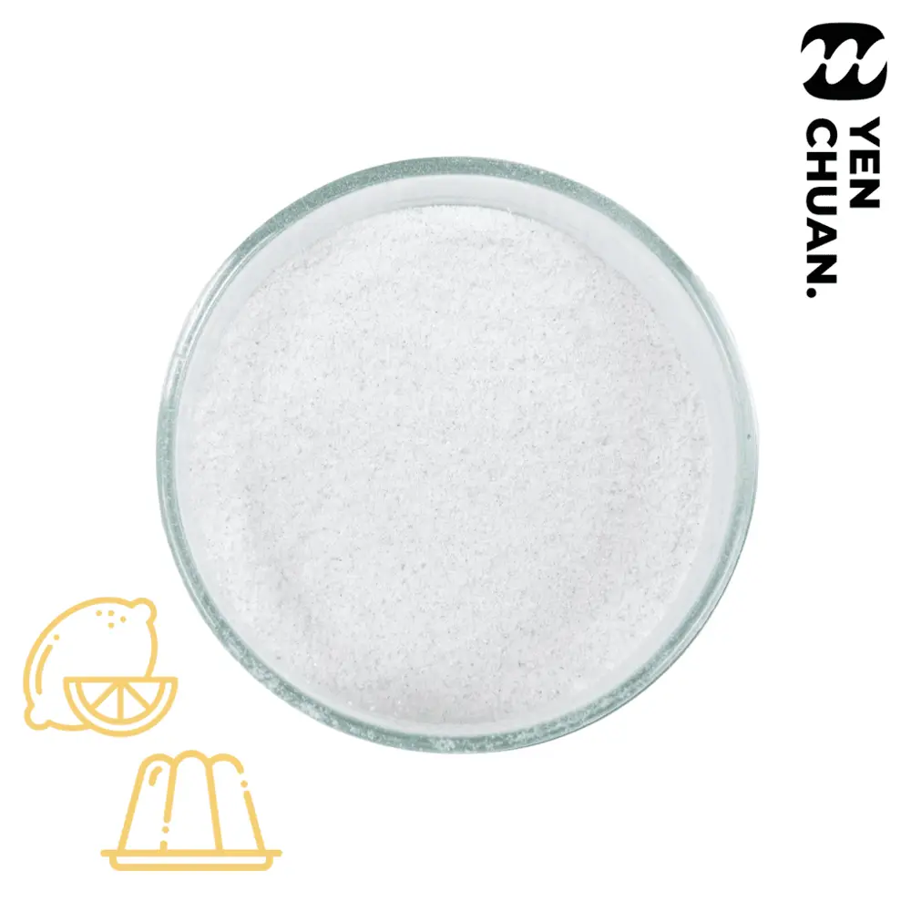

15X Lemon aiyu jelly
SKU JPS04
Aiyu, made from a type of plant grown in Taiwan, is a traditional Taiwanese dessert popular during summer.
Served in bowls with shaved ice, these blocks of jelly are the perfect way to stave off the summer heat!
We often have aiyu with zesty lemon juice and some honey. Wonder how it tastes like? Try our lemon aiyu powder!
Want to learn more about this unique dessert? Check out our handy guide to learn more!
Preview only: no inquiry is sent here. Wholesale prices, MOQ, lead time and shipping require confirmation by Yen Chuan.
Details
Unit size: 1kg
Units per carton: 20
Storage conditions: Room temperature
MOQ: 5 cartons
How to use:
1. Add the lemon aiyu jelly powder to a pot of boiling water
2. Mix until powder dissolves, gently stir in a vertical motion to prevent burning
3. Pour the mixture into a container and skim off any foam. Leave in a fridge to set
4. Once set, cut into chunks and serve with ice or as a topping
Traditionally aiyu is eaten with lemon juice and honey. Try mix and matching with your favourite fruits/syrups!
 Almond jelly powder
Almond jelly powder 6X aiyu jelly powder
6X aiyu jelly powder 10X fairy grass powder
10X fairy grass powder 200X aiyu jelly powder (caramel colour)
200X aiyu jelly powder (caramel colour)